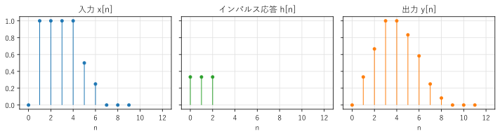
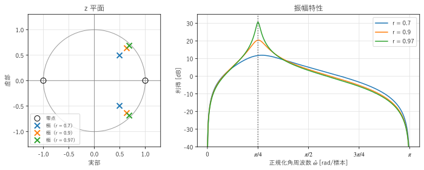

第 5 章 離散時間信号と LTI システム
信号を加工する仕組みを「システム」という。フィルタ、イコライザ、残響の付加、伝送路のひずみなど、信号処理の多くの対象は、線形時不変（LTI）システムとしてモデル化できる。この章では、離散時間の LTI システムが、インパルス応答または周波数応答という 1 つの関数で完全に特徴付けられることを示す。
基本的な離散時間信号
この章からは、標本化された信号 \(x[n]\) を主に扱う。\(n\) は整数の時刻（標本の番号）である。よく使う信号を次に示す。
名前 |
定義 |
備考 |
|---|---|---|
単位インパルス |
\(\delta[n] = \begin{cases} 1 & (n = 0) \\ 0 & (n \ne 0) \end{cases}\) |
デルタ関数の離散時間版。通常の関数として定義できる |
単位ステップ |
\(u[n] = \begin{cases} 1 & (n \ge 0) \\ 0 & (n < 0) \end{cases}\) |
連続時間の単位ステップ関数の離散時間版 |
正弦波 |
\(A\cos(\hat{\omega} n + \phi)\) |
\(\hat{\omega}\) は正規化角周波数 |
複素正弦波 |
\(e^{j\hat{\omega} n}\) |
実部と虚部がそれぞれ正弦波になる |
連続時間の正弦波 \(A\cos(2\pi f t + \phi)\) を標本化周波数 \(f_s\) で標本化すると、\(t = n/f_s\) を代入して
となる。\(\hat{\omega}\) を正規化角周波数といい、単位は rad/標本（1 標本あたりに進む角度）である。離散時間信号は標本化周波数の情報をもたないので、周波数は標本化周波数を基準にした相対的な値で表すことになる。ナイキスト周波数 \(f = f_s/2\) は \(\hat{\omega} = \pi\) に対応する。
\(e^{j(\hat{\omega} + 2\pi)n} = e^{j\hat{\omega} n}\) なので、\(\hat{\omega}\) と \(\hat{\omega} + 2\pi\) は同じ信号を表す。正規化角周波数は \(-\pi < \hat{\omega} \le \pi\)（または \(0 \le \hat{\omega} < 2\pi\)）の範囲だけを考えれば十分である。これは、第 4 章のエイリアシングを離散時間の側から見たものである。
システムと LTI システム
入力信号 \(x[n]\) を出力信号 \(y[n]\) に変換するものをシステムといい、\(y = \mathcal{T}\{x\}\) と書く。システムの中でも、次の 2 つの性質をもつものが特に重要である。
線形性：入力を定数倍したり足したりすると、出力も同じように定数倍したり足したりしたものになる。\(\mathcal{T}\{a x_1 + b x_2\} = a\mathcal{T}\{x_1\} + b\mathcal{T}\{x_2\}\)
時不変性：入力を \(k\) 標本だけ遅らせると、出力も \(k\) 標本だけ遅れるだけで、形は変わらない。\(y[n] = \mathcal{T}\{x\}[n]\) なら \(\mathcal{T}\{x[\cdot - k]\}[n] = y[n - k]\)
この 2 つの性質をもつシステムを LTI システム（linear time-invariant system、線形時不変システム）という。例えば、
3 点の移動平均 \(y[n] = \frac{1}{3}(x[n] + x[n-1] + x[n-2])\) は LTI システムである。
2 乗 \(y[n] = x[n]^2\) は線形でない（入力を 2 倍すると出力は 4 倍になる）。
\(y[n] = n\,x[n]\) は時不変でない（係数 \(n\) が時刻によって変わる）。
LTI システムは、図 17 のようなブロック図で表す。
図 17 LTI システムのブロック図
インパルス応答と畳み込み和
LTI システムに単位インパルス \(\delta[n]\) を入力したときの出力 \(h[n]\) を、そのシステムのインパルス応答という。LTI システムでは、インパルス応答が分かれば、任意の入力に対する出力が計算できる。その理由を示す。
任意の信号は、時刻をずらした単位インパルスの重み付きの和で表せる。
右辺の各項は、時刻 \(k\) にある高さ \(x[k]\) のインパルスである。時不変性から、\(\delta[n - k]\) に対する出力は \(h[n - k]\) であり、線形性から、重み付きの和に対する出力は出力の重み付きの和になる。したがって、
が得られる。これを畳み込み和といい、\(y = x * h\) と書く。第 3 章の畳み込みの積分を、和に置き換えたものである。2 番目の等号は、\(k\) を \(n - k\) に置き換えると得られ、\(x * h = h * x\) を表す。
2 番目の形 \(y[n] = \sum_k h[k]\,x[n-k]\) は、「現在と過去の入力に、インパルス応答の値を重みとして掛けて足す」と読める。3 点の移動平均なら \(h[0] = h[1] = h[2] = 1/3\) で、それ以外は 0 である。
サンプルの convolution.py は、畳み込み和を定義どおりの二重ループで計算し、NumPy の np.convolve() と比べる。長さ \(N\) の入力と長さ \(M\) のインパルス応答の畳み込みは、長さ \(N + M - 1\) になる。
21def convolve(x: NDArray[np.float64], h: NDArray[np.float64]) -> NDArray[np.float64]:
22 """有限長の x と h の畳み込み和を定義どおりに計算する.
23
24 x の長さを N、h の長さを M とすると、結果の長さは N + M - 1 である。
25 """
26 n_out = len(x) + len(h) - 1
27 y = np.zeros(n_out)
28 for n in range(n_out):
29 for k in range(len(h)):
30 if 0 <= n - k < len(x):
31 y[n] += h[k] * x[n - k]
32 return y
x = [0. 1. 1. 1. 1. 0.5 0.25 0. 0. 0. ]
h = [0.3333 0.3333 0.3333]
y = [0. 0.3333 0.6667 1. 1. 0.8333 0.5833 0.25 0.0833 0.
0. 0. ]
np.convolve と一致する: True
乱数の信号でも一致する: True

図 18 入力（左）、インパルス応答（中）、出力（右）
図 18 を見ると、移動平均によって、入力の急な立ち上がりと立ち下がりが、なだらかになっていることが分かる。出力は入力より 2 標本だけ長い。
サンプルの全体：convolution.py
畳み込みは、交換法則 \(x * h = h * x\)、結合法則 \((x * h_1) * h_2 = x * (h_1 * h_2)\)、分配法則 \(x * (h_1 + h_2) = x * h_1 + x * h_2\) を満たす。結合法則は、2 つの LTI システムを直列につないだシステムのインパルス応答が \(h_1 * h_2\) であることを意味する。
因果性と安定性
実際に作れるシステムには、次の 2 つの性質が求められる。
因果性：出力が、現在と過去の入力だけで決まり、未来の入力に依存しないこと。LTI システムでは、\(n < 0\) で \(h[n] = 0\) であることと同じである。リアルタイムの処理では、因果性のあるシステムしか実現できない。ただし、記録済みのデータを処理する場合は、「未来」の標本も使えるので、因果的でない処理も実現できる（第 9 章のゼロ位相フィルタリング）。
安定性：有界な入力（すべての \(n\) で \(|x[n]| \le M\) となる入力）に対して、出力も有界になること。これを BIBO 安定（bounded-input bounded-output）という。LTI システムが安定性をもつための必要十分条件は、インパルス応答が絶対総和可能であること、つまり
である。インパルス応答の長さが有限なら、このシステムは必ず安定である。
差分方程式
多くの LTI システムは、入力と出力の現在と過去の値の関係を表す差分方程式で記述できる。
右辺の第 1 項は入力の現在と過去の値の重み付きの和、第 2 項は過去の出力の重み付きの和である。
\(a_k\) がすべて 0 なら、出力は入力だけで決まり、インパルス応答は \(h[n] = b_n\)（長さ \(M + 1\)）になる。インパルス応答の長さが有限なので、FIR（finite impulse response）システムという。
過去の出力を使う（\(a_k\) に 0 でないものがある）場合は、出力が入力に戻って影響し続けるので、インパルス応答は一般に無限に続く。これを IIR（infinite impulse response）システムという。
例として、最も簡単な IIR システム
を考える。\(x[n] = \delta[n]\) を入力し、\(y[-1] = 0\) から順に計算すると、\(y[0] = 1\)、\(y[1] = a\)、\(y[2] = a^2\)、... となり、インパルス応答は \(h[n] = a^n u[n]\) である。\(|a| < 1\) なら \(\sum |h[n]| = 1/(1 - |a|)\) が有限なので安定、\(|a| \ge 1\) なら不安定である。過去の出力を使うと、少ない計算量で長いインパルス応答を作れるが、係数によっては不安定になりうる。
差分方程式は、遅延（\(z^{-1}\) の箱で表す）、係数の掛け算、足し算の 3 つの要素でブロック図に描ける。図 19 は、上の 1 次の IIR システムのブロック図である。
図 19 1 次の IIR システム \(y[n] = x[n] + a\,y[n-1]\) のブロック図
周波数応答
LTI システムに、複素正弦波 \(x[n] = e^{j\hat{\omega} n}\) を入力する。畳み込み和 (18) に代入すると、
となる。出力は、入力と同じ複素正弦波に、複素数 \(H(e^{j\hat{\omega}})\) を掛けたものである。この
を、システムの周波数応答という。LTI システムは、複素正弦波の周波数を変えず、各周波数ごとに決まった複素数を掛けるだけである。\(|H(e^{j\hat{\omega}})|\) を振幅特性（利得）、\(\arg H(e^{j\hat{\omega}})\) を位相特性という。\(H(e^{j\hat{\omega}})\) という書き方は、次の節の z 変換で \(z = e^{j\hat{\omega}}\) とした値であることを表している。
実数の係数をもつシステムに実数の正弦波 \(A\cos(\hat{\omega} n + \phi)\) を入力すると、出力は
となる。振幅が \(|H|\) 倍になり、位相が \(\arg H\) だけずれる。第 1 章で述べた「正弦波を入力すると、振幅と位相だけが変わる」という性質が、ここで示された。入力を正弦波に分解すれば（フーリエ解析）、各成分の振幅と位相の変化を計算して足し合わせることで、出力が求められる。
例として、3 点の移動平均の周波数応答を求める。
振幅特性は \(|1 + 2\cos\hat{\omega}|/3\) で、\(\hat{\omega} = 0\)（直流）で 1、\(\hat{\omega} = 2\pi/3\)（\(f = f_s/3\)）で 0 になる。低い周波数を通し、高い周波数を弱めるローパスフィルタである。位相特性は（\(1 + 2\cos\hat{\omega} > 0\) の範囲で） \(-\hat{\omega}\) であり、第 3 章の時間シフトの性質から、1 標本の遅れを表す。移動平均の出力は 3 点の中央の時刻の値に相当するので、1 標本遅れるのは自然である。
周波数応答の式 (20) は、インパルス応答 \(h[n]\) の離散時間フーリエ変換（第 6 章）である。つまり、インパルス応答と周波数応答はフーリエ変換の対であり、どちらもシステムを完全に表す。
z 変換と伝達関数
周波数応答を一般化した道具に、 z 変換がある。信号 \(x[n]\) の z 変換は、複素数 \(z\) の関数として次のように定義する。
\(z = e^{j\hat{\omega}}\)（複素平面の単位円の上）とすると、z 変換は周波数応答の式と一致する。z 変換の最も重要な性質は、「1 標本の遅延 \(x[n-1]\) の z 変換が \(z^{-1}X(z)\)」になることである。そのため、\(z^{-1}\) は 1 標本の遅延を表す記号として使われる。
差分方程式 (19) の両辺を z 変換すると、\(Y(z) = \sum_k b_k z^{-k} X(z) - \sum_k a_k z^{-k} Y(z)\) となり、
が得られる。\(H(z)\) を伝達関数という。伝達関数はインパルス応答の z 変換であり、\(z = e^{j\hat{\omega}}\) を代入すると周波数応答になる。
伝達関数の分子を 0 にする \(z\) を零点、分母を 0 にする \(z\) を極という。極と零点の配置から、システムの性質が読み取れる。
因果的なシステムが安定であるための必要十分条件は、すべての極が単位円の内側（\(|z| < 1\)）にあることである。例えば、1 次の IIR システム \(H(z) = 1/(1 - a z^{-1})\) の極は \(z = a\) であり、\(|a| < 1\) で安定という前の節の結果と一致する。
周波数応答は、単位円の上の点 \(e^{j\hat{\omega}}\) での \(H(z)\) の値である。単位円の上の点が極に近づくと利得が大きくなり、零点に近づくと利得が小さくなる（零点が単位円の上にあれば、その周波数の利得は 0 になる）。
図 20 は、極を \(re^{\pm j\pi/4}\)、零点を \(z = \pm 1\) に置いた 2 次のシステムの例である。極が単位円に近いほど（\(r\) が 1 に近いほど）、極の角度 \(\hat{\omega} = \pi/4\) の付近で利得が鋭く大きくなる。零点のある \(\hat{\omega} = 0\) と \(\hat{\omega} = \pi\) では利得が 0（\(-\infty\) dB）になる。このように、特定の周波数の付近だけを通すシステムを共振器という。

図 20 2 次の共振器の極と零点（左）と振幅特性（右）
SciPy では、scipy.signal.freqz() で伝達関数の係数から周波数応答を、scipy.signal.tf2zpk() で極と零点を計算できる。
1import numpy as np
2from scipy import signal
3
4r, theta = 0.9, np.pi / 4
5b = [1.0, 0.0, -1.0] # 分子 1 - z^-2
6a = [1.0, -2 * r * np.cos(theta), r**2] # 分母 1 - 2r cos(theta) z^-1 + r^2 z^-2
7w, h = signal.freqz(b, a, worN=1024) # w: 0 から pi の正規化角周波数
8zeros, poles, gain = signal.tf2zpk(b, a)
9print(np.abs(poles)) # [0.9 0.9]：すべて 1 未満なので安定
10print(w[np.argmax(np.abs(h))]) # 利得が最大になる正規化角周波数（約 0.79）
まとめ
正規化角周波数 \(\hat{\omega} = 2\pi f/f_s\) は 1 標本あたりの角度であり、ナイキスト周波数は \(\hat{\omega} = \pi\) に対応する。
LTI システムは、インパルス応答 \(h[n]\) で完全に決まり、出力は入力とインパルス応答の畳み込み和 \(y = x * h\) で計算できる。
因果的なシステムでは \(n < 0\) で \(h[n] = 0\)、安定なシステムでは \(\sum |h[n]| < \infty\) である。
差分方程式で表されるシステムには、過去の出力を使わない FIR と、使う IIR がある。
複素正弦波を入力すると、出力は周波数応答 \(H(e^{j\hat{\omega}})\) を掛けた同じ周波数の複素正弦波になる。
伝達関数 \(H(z)\) の極と零点の配置から、安定性と周波数特性を読み取れる。